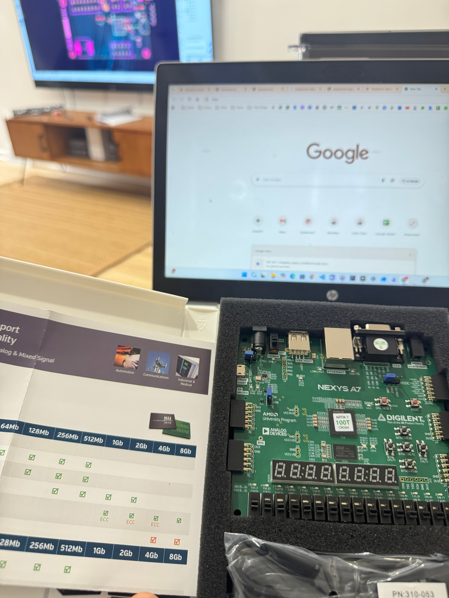

Dispatch
If the winds stop, then we die. Flexibility has a physics.
What if a cell must change from XNOR to NAND in the next instruction — timed just before it is used. Two control units. FPGA flexibility without pretending copper is SRAM.
Time is a monotonic quantity and universal. In current FPGA designs we program and use, and for another use-case we repeat. In future Tomato designs I am considering real-time programming and use. Assume all cells are already programmed, but the next instruction requires that cell 4568 change from XNOR into NAND(a, XOR(b, c)).
It makes every sense to have that update happen timed just before it is used. Built on decode programmability, that is a pipelined design with two control units: the system control, and a finite state machine that only updates specific cells as required.
The cells are majority, XNOR, XOR in one cycle; XNOR, AND, AND in about seven more; then some other combination in the next sequence. If all cells need to be changed, then you wait.

Fig. — Artix-7Where the “what if” gets silicon before copper
I take that from a comment my father, who worked on wind generators in Germany, quoted from his lead engineer: for the wind generators we are building, what if the winds stop? He answered: then we die. Flexibility must remain within the limits of physics. An 8-bit ALU that I started with is no longer recognizable for what it is now.